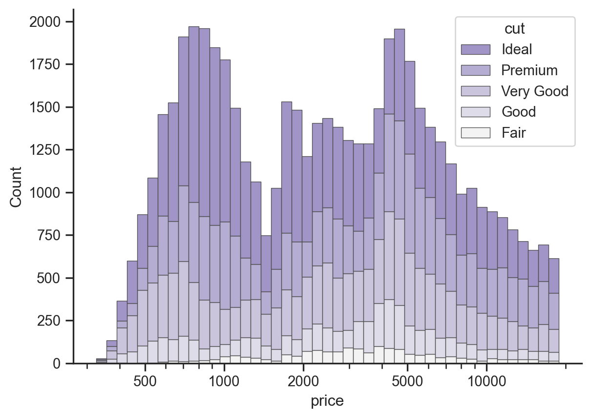
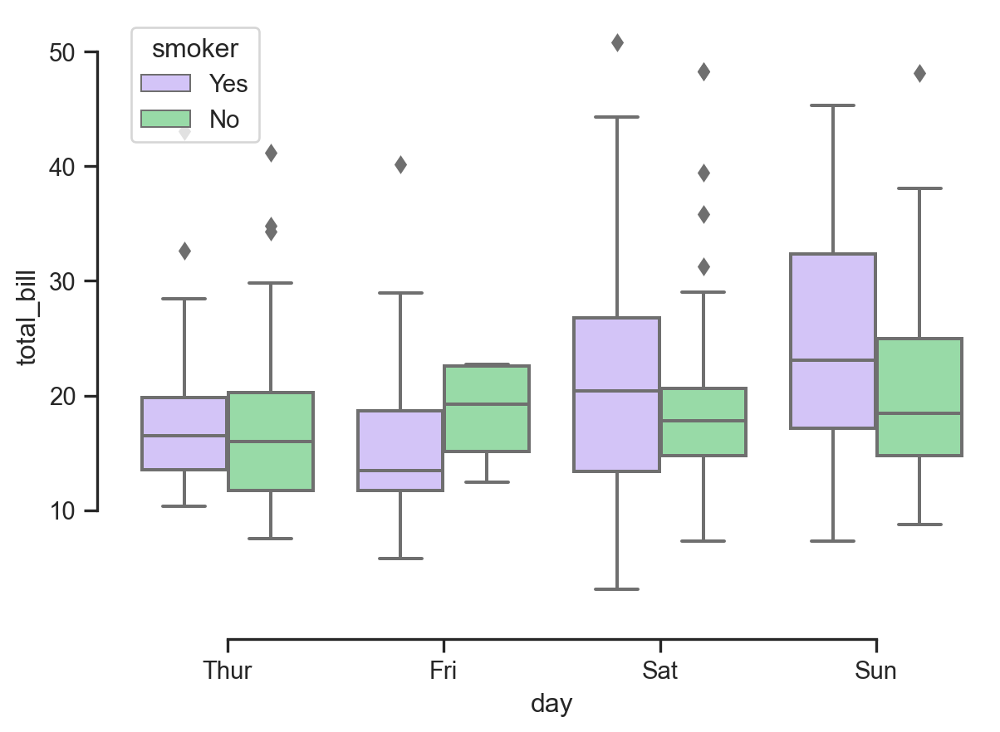
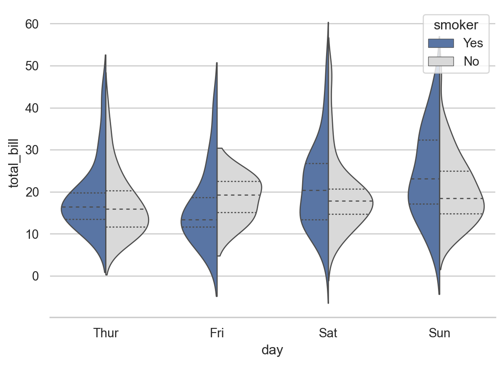
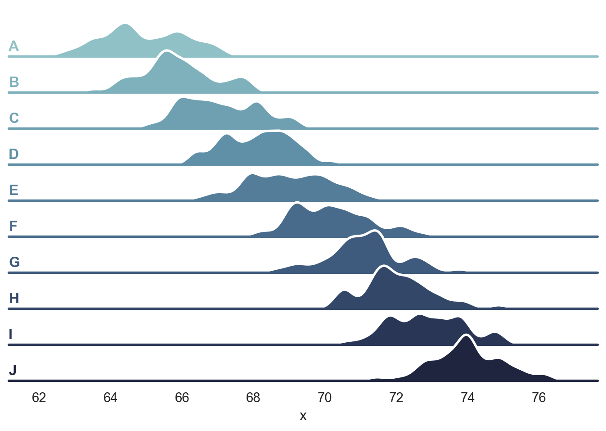
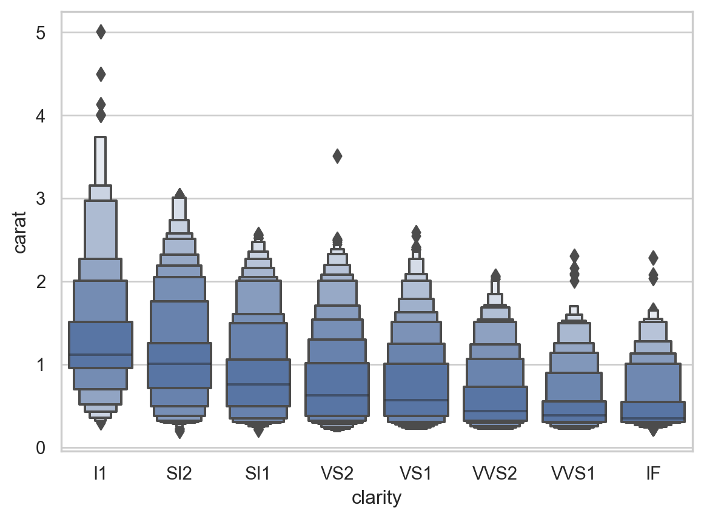
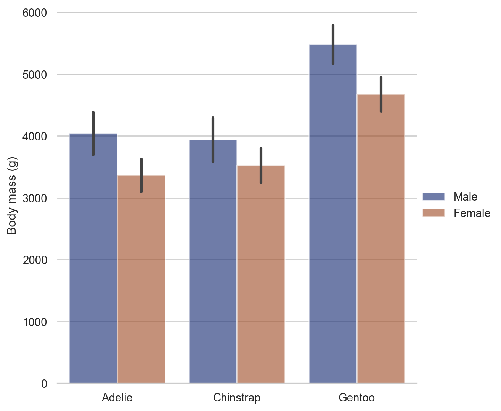

Code
import numpy as np
import pandas as pd
import seaborn as sns
import matplotlib as mpl
import matplotlib.pyplot as pltZack Larsen
April 23, 2022
sns.set_theme(style="ticks")
diamonds = sns.load_dataset("diamonds")
f, ax = plt.subplots(figsize=(7, 5))
sns.despine(f)
sns.histplot(
diamonds,
x="price", hue="cut",
multiple="stack",
palette="light:m_r",
edgecolor=".3",
linewidth=.5,
log_scale=True,
)
ax.xaxis.set_major_formatter(mpl.ticker.ScalarFormatter())
ax.set_xticks([500, 1000, 2000, 5000, 10000])
https://seaborn.pydata.org/examples/grouped_boxplot.html

https://seaborn.pydata.org/examples/grouped_violinplots.html
sns.set_theme(style="whitegrid")
# Load the example tips dataset
tips = sns.load_dataset("tips")
# Draw a nested violinplot and split the violins for easier comparison
sns.violinplot(data=tips, x="day", y="total_bill", hue="smoker",
split=True, inner="quart", linewidth=1,
palette={"Yes": "b", "No": ".85"})
sns.despine(left=True)
Note how the split violin plot conveys more information than the boxplot, as we are able to see more details about the mass of the distribution represented by volume, whereas the boxplot only shows the relative range of the IQR but not the mass of the distribution.
https://seaborn.pydata.org/examples/kde_ridgeplot.html
sns.set_theme(style="white", rc={"axes.facecolor": (0, 0, 0, 0)})
# Create the data
rs = np.random.RandomState(1979)
x = rs.randn(500)
g = np.tile(list("ABCDEFGHIJ"), 50)
df = pd.DataFrame(dict(x=x, g=g))
m = df.g.map(ord)
df["x"] += m
# Initialize the FacetGrid object
pal = sns.cubehelix_palette(10, rot=-.25, light=.7)
g = sns.FacetGrid(df, row="g", hue="g", aspect=15, height=.5, palette=pal)
# Draw the densities in a few steps
g.map(sns.kdeplot, "x",
bw_adjust=.5, clip_on=False,
fill=True, alpha=1, linewidth=1.5)
g.map(sns.kdeplot, "x", clip_on=False, color="w", lw=2, bw_adjust=.5)
# passing color=None to refline() uses the hue mapping
g.refline(y=0, linewidth=2, linestyle="-", color=None, clip_on=False)
# Define and use a simple function to label the plot in axes coordinates
def label(x, color, label):
ax = plt.gca()
ax.text(0, .2, label, fontweight="bold", color=color,
ha="left", va="center", transform=ax.transAxes)
g.map(label, "x")
# Set the subplots to overlap
g.figure.subplots_adjust(hspace=-.25)
# Remove axes details that don't play well with overlap
g.set_titles("")
g.set(yticks=[], ylabel="")
g.despine(bottom=True, left=True)<seaborn.axisgrid.FacetGrid at 0x7fecd6ff4ca0>
<AxesSubplot:xlabel='clarity', ylabel='carat'>
sns.set_theme(style="whitegrid")
penguins = sns.load_dataset("penguins")
# Draw a nested barplot by species and sex
g = sns.catplot(
data=penguins, kind="bar",
x="species", y="body_mass_g", hue="sex",
ci="sd", palette="dark", alpha=.6, height=6
)
g.despine(left=True)
g.set_axis_labels("", "Body mass (g)")
g.legend.set_title("")